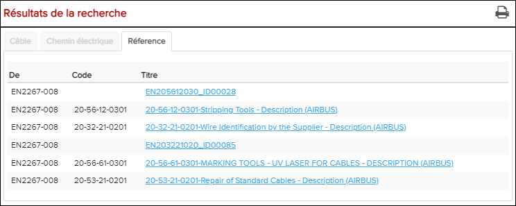
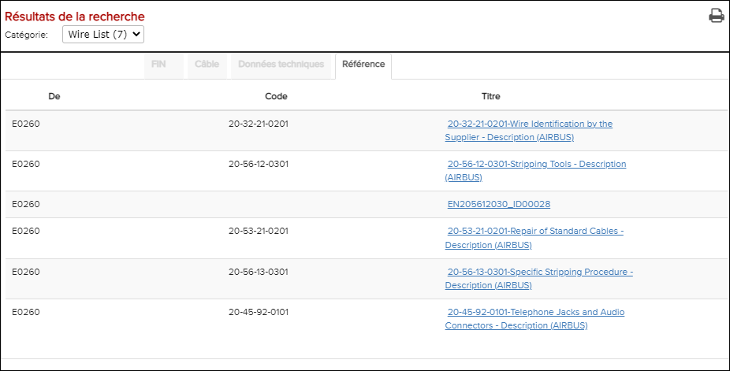

Les résultats de la recherche de l'onglet Référence affichent un historique des schémas de câblage ouverts et des guides d'utilisation ESPM.

Résultats de l'onglet Référence

Résultats de l'onglet de référence pour la recherche FIN